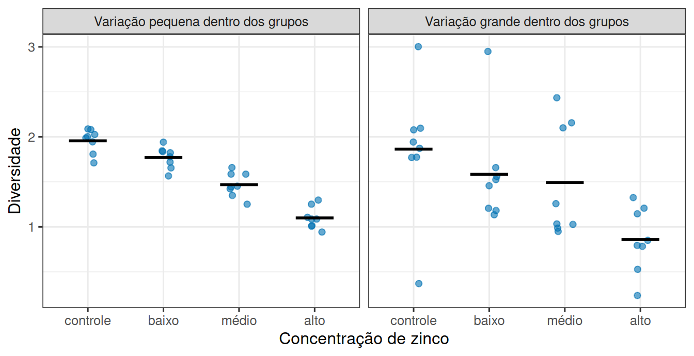
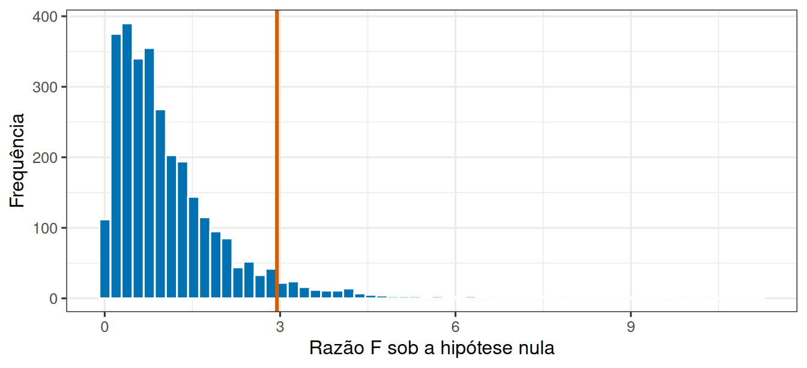

Leitura prévia 05
Entre grupos ou dentro dos grupos?
1 Agora são quatro tratamentos
Um experimento avalia o efeito de quatro concentrações de zinco sobre a diversidade de algas em canais experimentais. Quatro tratamentos, oito canais por tratamento, uma medida de diversidade em cada canal.
A saída óbvia seria comparar os tratamentos dois a dois. Mas quatro tratamentos geram seis pares, e cada comparação carrega sua própria chance de alarme falso. Fazendo seis testes a 5%, a chance de pelo menos um alarme falso passa de 25%, mesmo que o zinco não faça absolutamente nada.
Precisamos de uma pergunta que valha para o conjunto:
A separação entre os quatro grupos é grande em comparação com a variação que existe dentro deles?
2 Duas situações com a mesma diferença de médias
Compare os dois cenários abaixo. Em ambos, as médias dos quatro grupos são exatamente as mesmas.
À esquerda, a queda da diversidade ao longo das quatro concentrações salta aos olhos: cada grupo ocupa uma faixa estreita e a ordem entre eles é imediata. À direita, com as mesmas médias, as nuvens se sobrepõem amplamente: olhando um canal isolado, seria difícil dizer de qual tratamento ele veio.
A conclusão é que a diferença entre médias, sozinha, não diz nada. Ela só ganha sentido quando comparada à variação de fundo.
3 Duas fontes de variação
Toda observação carrega duas contribuições, e a análise consiste em separá-las.
Variação entre grupos. O quanto as médias dos tratamentos se afastam da média geral. É a parte que o tratamento explica.
Variação dentro dos grupos. O quanto os canais de um mesmo tratamento diferem entre si. Como receberam a mesma condição, essa variação vem de tudo o que não é o tratamento: diferenças entre canais, erro de medição, acaso. É a variação residual.
4 Por que não comparar as somas diretamente
Porque somas dependem de quantas parcelas foram somadas. \(SQ_{\text{dentro}}\) acumula uma parcela por canal; \(SQ_{\text{entre}}\), uma por grupo. Comparar as duas seria comparar 32 parcelas com 4.
A correção é dividir cada soma pelo seu número de graus de liberdade, ou seja, quantos valores podiam variar livremente. Com \(k\) grupos e \(n\) observações no total:
\[QM_{\text{entre}} = \frac{SQ_{\text{entre}}}{k - 1} \qquad QM_{\text{dentro}} = \frac{SQ_{\text{dentro}}}{n - k}\]
O resultado, chamado quadrado médio, é uma variação média por grau de liberdade. Agora as duas quantidades são comparáveis.
5 A razão F
Comparáveis, elas podem ser postas em uma razão:
\[F = \frac{QM_{\text{entre}}}{QM_{\text{dentro}}}\]
A leitura é direta. Se o tratamento não faz nada, as duas fontes medem a mesma coisa (variação residual) e \(F\) fica em torno de 1. Se o tratamento separa os grupos além do ruído, o numerador cresce e \(F\) fica maior que 1.

A linha marca 2,95, o valor acima do qual ficam os 5% maiores \(F\) quando não há efeito nenhum. Nesta simulação, 5,1% dos 3000 experimentos passaram dessa marca, próximo dos 5% esperados. É essa raridade que o valor de p quantifica.
6 O que a razão F responde, e o que não responde
A hipótese testada é sobre o conjunto: todas as médias de tratamento são iguais. Um valor de p pequeno indica que essa descrição não se sustenta, mas não diz quais tratamentos diferem.
Descobrir isso é o passo seguinte, feito com comparações a posteriori, como o teste de Tukey, que compara todos os pares controlando a taxa global de alarmes falsos. A ordem importa: primeiro a pergunta global, depois as comparações específicas.
Vale registrar que essa lógica não é nova. Com dois grupos, a razão F e o teste t levam exatamente à mesma conclusão: são duas formas de escrever a mesma comparação. A análise de variância apenas generaliza a ideia para qualquer número de grupos.